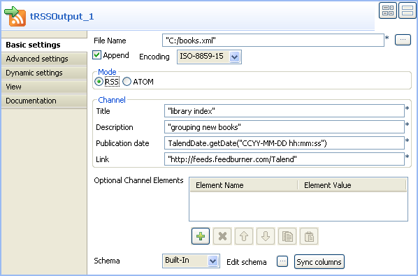
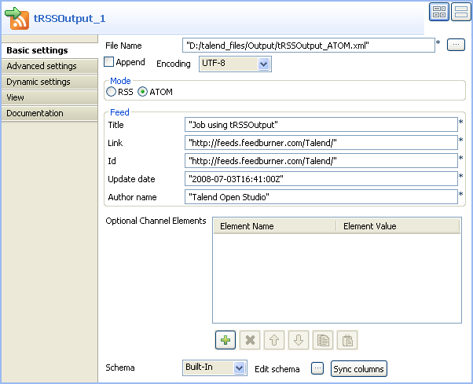

Famille du composant | Internet | |
Fonction | Le composant tRSSOutput écrit des fichiersXML RSS_Feed ou Atom_Feed. | |
Objectif | Le tRSSOutput permet de créer des fichiers XML contenant des flux RSS ou Atom. | |
Basic settings | File Name | Chemin d’accès ou nom du fichier XML en sortie. Consultez également le Guide utilisateur de Talend Open Studio. |
| Encoding | Sélectionnez l’encodage à partir de la liste ou sélectionnez Custom et définissez-le manuellement. Ce champ est obligatoire pour la manipulation des données des bases de données. |
| Append | Cochez cette option pour ajouter des nouvelles lignes à la fin du fichier. |
| Mode | Sélectionnez RSS ou ATOM selon le flux que vous souhaitez générer. |
| Channel (en mode RSS) | NoteLes informations à renseigner dans cette zone concernent l’intégralité des données saisies, du site, etc. plutôt que des éléments particuliers. Title : Saisissez un titre significatif. Description : Entrez une description du contenu qui vous semble suffisamment détaillée. Publication date : Renseignez la date adéquate. Link : Saisissez l’URL appropriée. |
| Feed (en mode ATOM) | Title : Saisissez un titre significatif. Link : Saisissez l’URL appropriée. Id : Saisissez l’URL valide correspondant au champ Link. Update date : Saisissez la date de mise à jour. Author name : Saisissez le nom de l’auteur. |
| Optionnal Channel Elements | Renseignez dans le tableau les informations relatives aux métadonnées du flux RSS. Cliquez sur le bouton [+] pour ajouter de nouvelles lignes : Element Name : nom de la métadonnée. Element Value : contenu de la métadonnée. |
| Schema type et Edit schema |
Un schéma est une description de lignes, il définit le nombre de champs qui sont traités et passés au composant suivant. Le schéma est soit local (Built-in) , soit distant dans le Repository. Dans le contexte d’utilisation du tRSSInput, le schéma est composé de quatre colonnes : TITLE, DESCRIPTION, PUBDATE et Link. Les paramètres de titre sont en lecture seule, contrairement à leur type et leur longueur. |
Advanced settings | tStatCatcher Statistics | Cochez cette case pour collecter les données de log au niveau du Job ainsi qu’au niveau de chaque composant. |
Utilisation | Ce composant doit obligatoirement être relié à un composant de début ou un composant intermédiaire. | |
Ce scénario Java a pour but de :
créer un flux RSS pour des fichiers que vous souhaitez partager avec d’autres personnes, et
stocker l’ensemble des fichiers sur un serveur FTP.
Ce scénario permet d’écrire un fichier XML de flux RSS à partir d’une table MySQL contenant des informations concernant des livres. Il ajoute également des liens vers les fichiers stockés sur un serveur FTP au cas où les utilisateurs voudraient avoir accès aux fichiers dans leur intégralité.
A partir de la Palette, cliquez-déposez les composants suivants dans l’éditeur graphique : le tMysqlInput, le tRSSOutput et le tFTPPut.
Cliquez droit sur le tMysqlInput et connectez-le au tRSSOutput à l’aide d’un lien de type Row Main.
Cliquez droit sur le tMysqlInput et connectez-le au tFTPPut à l’aide d’un lien de type OnSubjobOk.

Dans l’espace graphique, sélectionnez le tMysqlInput.
Cliquez sur la vue Component pour définir la configuration de base (Basic settings) du tMysqlInput.

Configurez le champ Property type en mode Repository puis cliquez sur le bouton [...] pour sélectionner la base de données adéquate dans la liste. Les détails de connexion ainsi que le schéma sont remplis automatiquement.
Dans le champ Table Name, saisissez le nom de votre table ou cliquez sur le bouton [...] et sélectionnez le nom de la table à partir de la liste. Dans ce scénario, la table Mysql de données saisies s’appelle “rss_talend” et le schéma comporte quatre colonnes, TITLE, Description, PUBDATE, et LINK.
Dans le champ Query, saisissez la requête de base de données en faisant particulièrement attention à ce que l’ordre des champs corresponde au schéma défini, ou cliquez sur Guess Query.
Dans l’espace graphique, sélectionnez le composant tRSSOutput.
Cliquez sur la vue Component pour définir la configuration de base (Basic settings) du tRSSOutput.
Dans le champ File name, utilisez le nom de fichier et son chemin d’accès définis par défaut ou parcourez vos dossiers pour définir votre propre fichier XML de sortie.
Sélectionnez le type d’encodage à partir de la liste Encoding Type.
Dans la zone Mode, sélectionnez RSS.
Dans le panneau Channel, saisissez un titre, une description, une date de publication et un lien définissant l’ensemble de vos données saisies.
Sélectionnez le type de schéma dans la liste Schema puis cliquez sur Edit Schema pour le modifier si nécessaire.
Note
Vous pouvez également cliquer sur Sync Column pour récupérer le schéma généré par le composant précédent.
Enregistrez votre Job puis appuyez sur F6 pour en exécuter la première partie.

Le composant tRSSOutput a créé en sortie un flux RSS au format XML pour les fichiers définis.
Pour stocker des fichiers complets sur un serveur FTP :
Dans l’espace graphique, sélectionnez le FTPPut et cliquez sur la vue Component pour définir la configuration de base (Basic settings) du tFTPPut.

Saisissez le nom du serveur et le numéro de port dans les champs correspondants.
Renseignez vos détails de connexion dans les champs Username et Password.
Parcourez vos dossier jusqu’au répertoire local ou tapez manuellement le chemin d’accès dans le champ Local directory.
Entrez les détails du serveur de répertoire distant.
Sélectionnez le mode de transfert à partir de la liste Transfer mode.
Dans le panneau Files, cliquez sur le bouton [+] pour ajouter des lignes puis remplissez les masques de fichiers de tous les fichiers à copier sur le répertoire distant. Dans ce scénario, les fichiers à enregistrer sur le serveur FTP sont tous des fichiers texte.
Enregistrez votre Job puis appuyez sur F6 pour l’exécuter.
Les fichiers définis sont copiés sur le serveur distant.
Ce scénario Java à deux composants a pour but de créer un flux RSS contenant des métadonnées et de rediriger les informations obtenues dans un fichier XML de flux RSS en sortie.
A partir de la Palette, cliquez-déposez les composants tRSSInput et tRSSOutput dans l’éditeur graphique.
Cliquez droit sur le tRSSInput et connectez-le au tRSSOutput à l’aide d’un lien de type Row Main.

Double-cliquez sur le composant tRSSInput pour ouvrir sa vue Basic settings et définir sa configuration de base.

Saisissez l'URL du RSS_Feed. Dans ce scénario, le composant tRSSOutput mène au RSS_Feed http://feeds.feedburner.com/Talend.
Dans l’espace graphique, double-cliquez sur le composant pour ouvrir sa vue Component et définir sa configuration de base (Basic settings).

Dans le champ File name, utilisez le nom de fichier de sortie et son chemin d’accès définis par défaut ou parcourez vos dossiers pour définir votre propre fichier XML de sortie.
Sélectionnez le type d’encodage à partir de la liste Encoding Type.
Dans la zone Mode, sélectionnez RSS.
Dans le panneau Channel, saisissez un titre, une description, une date de publication et un lien définissant l’ensemble de vos données saisies.
Dans le tableau Optional Channel Element, définissez les métadonnées de votre flux RSS. Dans ce scénario, le flux comprend deux métadonnées : copyright, à laquelle est associée la valeur tos, et language, à laquelle est associée la valeur en_us.
Sélectionnez le type de schéma dans la liste Schema puis cliquez sur Edit Schema pour le modifier si nécessaire.
Note
Vous pouvez également cliquer sur Sync Column pour récupérer le schéma généré par le composant précédent.
Appuyez sur Ctrl+S pour sauvegarder votre Job.
Appuyez sur F6 ou cliquez sur le bouton Run de l'onglet Run pour l’exécuter.

Les fichiers définis sont copiés dans le fichier XML de sortie et les métadonnées apparaissent sous le noeud <channel>, en dessous des informations de base du flux RSS.
Ce scénario Java décrit un Job à deux composants, qui génère des données et les écrit dans un fichier XML de flux ATOM.
Déposez les composants suivants de la Palette dans l’espace de modélisation graphique : un tFixedFlowInput du groupe Misc et un tRSSOutput du groupe Internet.
Cliquez-droit sur le tFixedFlowInput et connectez-le au tRSSOutput à l’aide d’un lien Row Main.
Une fenêtre pop-up s’affiche et vous demande si vous souhaitez passer le schéma du tRSSOutput au tFixedFlowInput, cliquez sur Yes (Oui).

Dans l’espace de modélisation graphique, double-cliquez sur le tFixedFlowInput afin d’afficher sa vue Component et définir ses Basic settings.

Dans le champ Number of rows, laissez le paramètre par défaut, 1, pour ne générer qu’une ligne de données.
Dans la zone Mode, laissez sélectionnée l’option Use Single Table et remplissez le tableau Values. Notez que le champ Column du tableau Values est rempli par les colonnes du schéma défini dans le composant.
Dans le champ Value du tableau Values, saisissez les données que vous souhaitez envoyer au composant suivant.
Dans l’espace de modélisation, double-cliquez sur le composant tRSSOutput afin d’afficher sa vue Component et définir ses Basic settings.
Cliquez sur le bouton [...] à côté du champ File Name afin de définir le répertoire et le nom du fichier XML de sortie.
Dans la zone Mode, sélectionnez ATOM pour générer un fichier XML de flux ATOM.
Avertissement
Comme le format du flux ATOM est strict, des informations par défaut sont requises afin de créer le fichier XML. Le schéma du tRSSOutput comprend donc des colonnes par défaut contenant ces informations. Ces colonnes par défaut sont grisées pour indiquer qu’elles ne doivent pas être modifiées. Si vous choisissez de modifier le schéma du composant, le fichier XML ATOM créé ne sera pas valide.
Dans la zone Feed, saisissez un titre, un lien, un ID, la date de mise à jour, et le nom de l’auteur, afin de définir vos données comme un tout.